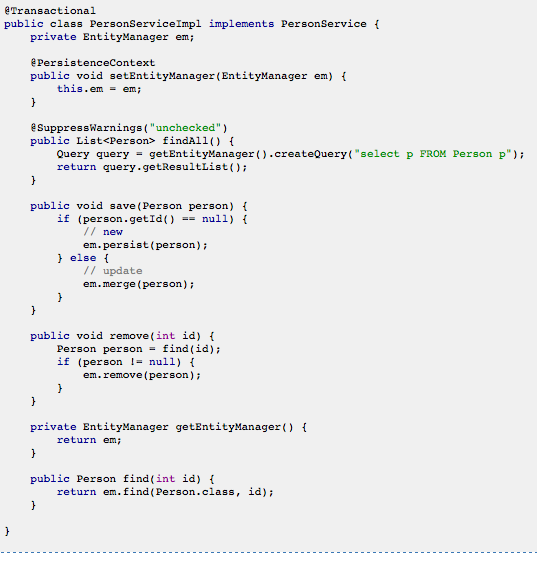

Unhappy Code
From http://struts.apache.org/2.3.1.2/docs/struts-2-spring-2-jpa-ajax.html

Happy Code
- Expressive
- Readable
- Concise
Hemingway

Haiku
An old silent pond...
A frog jumps into the pond,
splash! Silence again.
Basho (1644-1694)
ActiveSupport
- Born from Rails
- Standalone gem
- Utilities, Core Extensions, Pattern Implementations
ActiveSupport::StringInquirer
require 'active_support'
# true
role = ActiveSupport::StringInquirer.new "admin"
# "admin"
role == "admin"
# true
role.admin?
# trueStringInquirer extends String
How It Works
def method_missing(method_name, *arguments)
if method_name.to_s[-1,1] == "?"
self == method_name.to_s[0..-2]
else
super
end
endNumeric Extensions
require 'active_support/core_ext/numeric'
# false
5.days
# 5 days
5.days.ago
# Mon Feb 06 16:45:28 -0500 2012
1.year.from_now
# Mon Feb 11 16:45:36 -0500 2013
1.terabyte
# 1099511627776
1.month.from_now - 2.days
# Fri Mar 09 16:46:11 -0500 2012We reopen the Ruby core class Numeric and add in methods
How It Works
class Numeric
def seconds
ActiveSupport::Duration.new(self,
[[:seconds, self]])
end
alias :second :seconds
# Reads best without arguments: 10.minutes.ago
def ago(time = ::Time.current)
time - self
end
#...
endString Extensions
'happy code'.titleize
# "Happy Code"
"x-men: the last stand".titleize
# "X Men: The Last Stand"
'python'.pluralize
# "pythons"
'ruby'.pluralize
# "rubies"
"octopi".singularize
# "octopus"
'hello world'.parameterize
# "hello-world"
'hello world'.parameterize.underscore.camelize
# "HelloWorld"Object Extensions
class HappyCode; attr_accessor :val; end
# nil
hc = HappyCode.new
hc.val.nil ? nil : hc.val.capitalize
# Unhappy code
hc.val.try(:capitalize)
# nil
hc.val = "burger"
hc.val.try(:capitalize)
# "Burger"How It Works
Open up both Object and Nil
class Object
def try(*a, &b)
if a.empty? && block_given?
yield self
else
__send__(*a, &b)
end
end
end
class NilClass
def try(*args)
nil
end
endCommon Pattern
def long_running_operation
@lro ||= do_work_here
@lro
endUsing Memoizable
extend ActiveSupport::Memoizable
def long_running_operation
do_work_here
end
memoize :expensive_operation_here
# later on...clear with
flush_cash :expensive_operation_hereHow It Works
# In a nutshell...
def memoize(*symbols)
symbols.each do |symbol|
original_method = :"_unmemoized_#{symbol}"
memoized_ivar =
ActiveSupport::Memoizable.memoized_ivar_for(symbol)
alias #{original_method} #{symbol}
class_eval "def #{symbol}(reload = false)
if reload || !defined?(#{memoized_ivar}) ||
#{memoized_ivar}.empty?
#{memoized_ivar} = [#{original_method}]n
end
#{memoized_ivar}[0]
end"
end
endWith ActiveSupport
- Practical Functions
- Less Boilerplate
- Happier Code